CS180, Fall 2026
A flow model makes an image by starting from pure noise and following a velocity field, one small step at a time, until it reaches a clean image. Part A uses a big pretrained text-to-image flow model (PixNerd) to denoise, generate and edit images and to make optical illusions. Part B builds a small UNet from scratch and trains it with flow matching to generate MNIST digits.
Both parts use the same convention. A noisy image is a straight-line mix of Gaussian noise \(x_0 = \epsilon\) and a clean image \(x_1\), with \(t = 0\) being pure noise and \(t = 1\) being the clean image. The path and its velocity are
\[x_t = (1-t)\,x_0 + t\,x_1 \qquad u = \frac{d x_t}{dt} = x_1 - x_0\]The network is trained to predict the velocity \(u\), and sampling integrates it from \(t = 0\) to \(t = 1\).
interpolate is the straight line from noise to image, \(x_t = (1-t)\epsilon + t\,x_1\). This is
not just adding noise, because the image is also scaled down by \(t\). I sampled one noise tensor and reused it for
\(t = 0.25, 0.5, 0.75\) so the three inputs only differ in how far along the line they are. The image is my
house photo from Project 0, center cropped to \(512 \times 512\).
def interpolate(image, noise, t):
#straight line from noise (t = 0) to the clean image (t = 1)
return (1 - t) * noise + t * image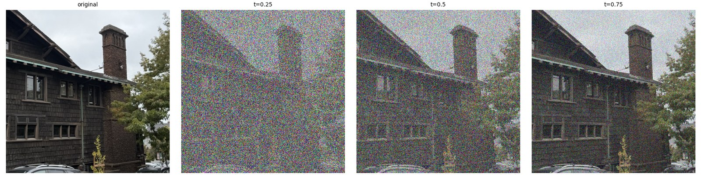
The baseline uses no learned model. Since the image part of \(x_t\) is scaled by \(t\), I divide by \(t\) first, \(\frac{x_t}{t} = x_1 + \frac{1-t}{t}\epsilon\), and then Gaussian blur it. The notebook tries \(\sigma = 1, 2, 4, 8, 16\) and keeps the one closest to the original. Blurring averages the noise away, but it averages the details away too. At \(t = 0.25\) the best blur needed \(\sigma = 8\) and still left big colored blotches, with the windows completely gone.
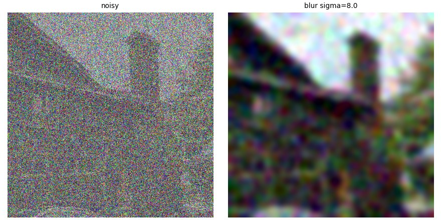
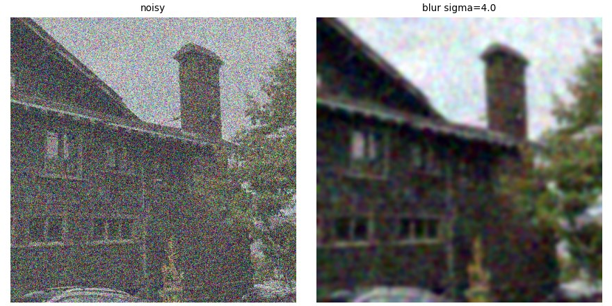
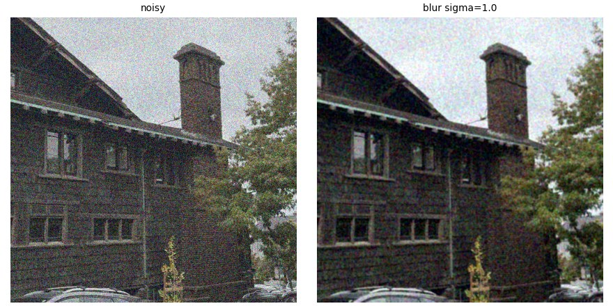
The model predicts a velocity, not the noise, so to get a clean image in one shot I follow that velocity for the rest of the path, \(\hat{x}_1 = x_t + (1-t)\,v_\theta(x_t, t, c)\), with the prompt "a high quality photo".
def one_step_denoise(x, t, condition, predict_velocity):
#the model predicts velocity, so jump the rest of the way along it, x1_hat = x_t + (1 - t) * v
v = predict_velocity(x, t, condition)
return x + (1 - t) * v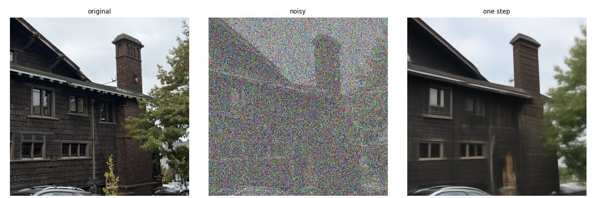
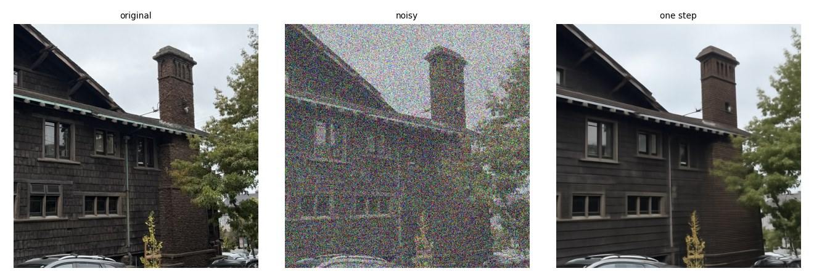
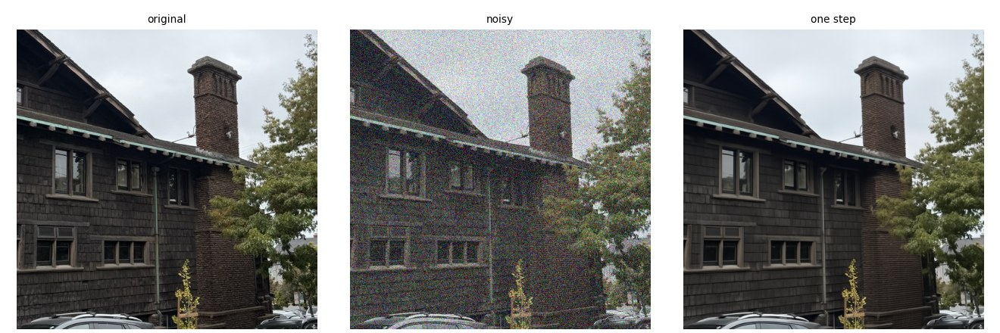
The one-step estimate is far better than the blur. At \(t = 0.75\) it is almost the original, shingles and all. At \(t = 0.25\) it gets the big shapes right (roof, chimney, two rows of windows, the tree) but the house is smooth and soft, the shingle texture is gone, and the windows are simplified. With that much noise there are many clean images that could have produced \(x_t\), and a single prediction lands on their average, which is blurry.
What the model adds in one step is \((1-t)\hat{v}_t\). Because I know the original image and the noise, I also know what it should add, \((1-t)v_{\mathrm{gt}} = (1-t)(x_1 - \epsilon) = x_1 - x_t\). The error map is the RMS difference over the RGB channels at each pixel.
v_hat = predict_velocity(x_t, t, condition)
predicted_update = (1 - t) * v_hat
ground_truth_update = (1 - t) * (clean_image - epsilon)
#rms over the rgb channels at every pixel
error_map = torch.sqrt(((predicted_update - ground_truth_update) ** 2).mean(dim=1))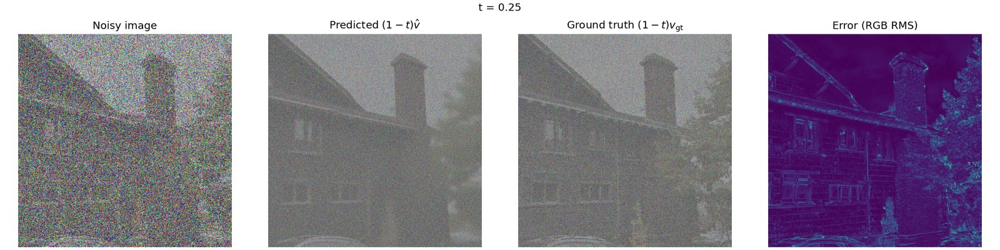
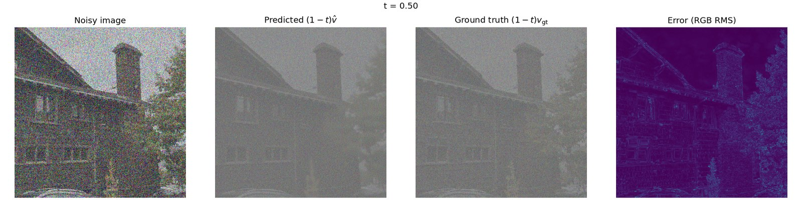
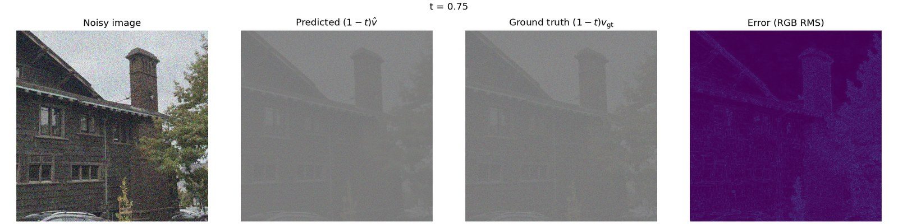
The predicted and ground-truth updates look almost the same, and both are mostly "remove the noise and bring the house back". The error map shows where they differ. The roof edges, window frames, chimney outline and the tree's leaves light up, while the flat sky is nearly zero. Those are the fine details the noise hides. The error also fades as \(t\) grows, because the update is scaled by \((1-t)\) and there is less noise left to undo.
One step goes wrong because the velocity changes along the way. Euler sampling takes a small step, predicts a new velocity at the new image and time, and repeats, \(x_{t+h} = x_t + h\,v_\theta(x_t, t, c)\) with \(h = 0.02\). The last step gets shortened so it lands exactly on \(t = 1\), which matters when the start time doesn't divide evenly (starting at 0.93 takes three steps of 0.02 and one of 0.01).
@torch.inference_mode()
def euler_sample(x_start, t_start, step_size, velocity):
#number of steps to reach t = 1, rounding first so 0.5 / 0.02 doesn't become 25.000000000000004
num_steps = math.ceil(round((1 - t_start) / step_size, 6))
x = x_start
t = t_start
#keep the start, every fifth update, and the end as (t, image) pairs
states = [(t, x)]
#progress bar so long runs don't look frozen
for k in tqdm(range(num_steps), desc=f"euler from t={t_start:.2f}", leave=False):
#the last step gets shortened so we land exactly on t = 1
h = min(step_size, 1 - t)
#recompute the velocity at the current image and time every step
x = x + h * velocity(x, t)
t = t + h
if k == num_steps - 1:
t = 1.0
if (k + 1) % 5 == 0 or k == num_steps - 1:
if states[-1][0] != t:
states.append((t, x))
return x, states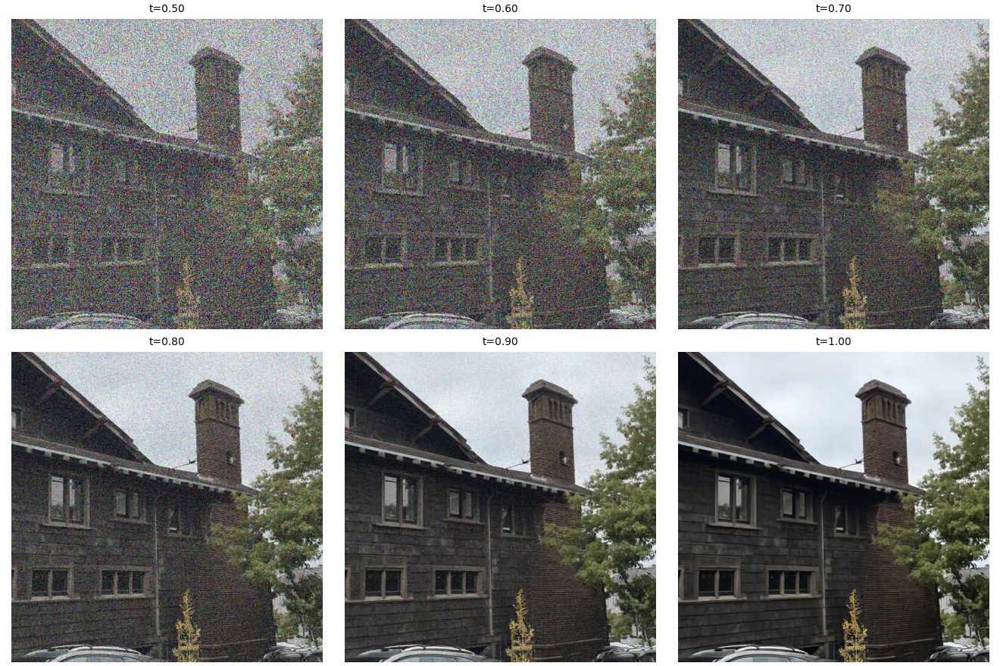
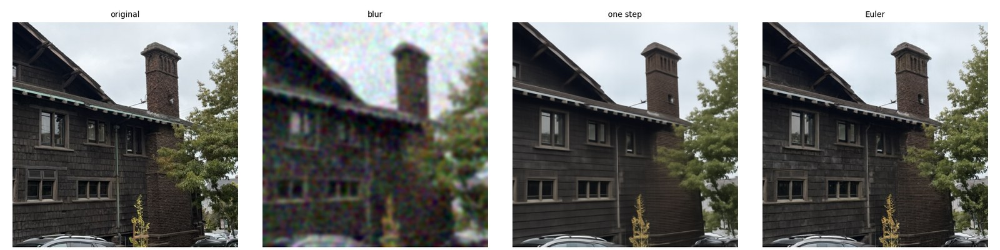
The blur is a mess of colored blobs. The one-step and Euler results both look like the house, and Euler is the sharpest of the three, with crisp window frames and shingle texture where the one-step result is smoother. The mean squared error against the original tells a different story, though, with blur at 0.0373, one-step at 0.0133 and Euler at 0.0159. One-step wins on MSE because it predicts the average of the possible images, and the average is exactly what minimizes squared error. Euler commits to one specific set of details, which look real but don't line up pixel for pixel with my photo, so they cost more MSE. Lower MSE doesn't mean a better looking image.
Starting euler_sample at \(t = 0\) from pure noise generates images from scratch (50 updates).
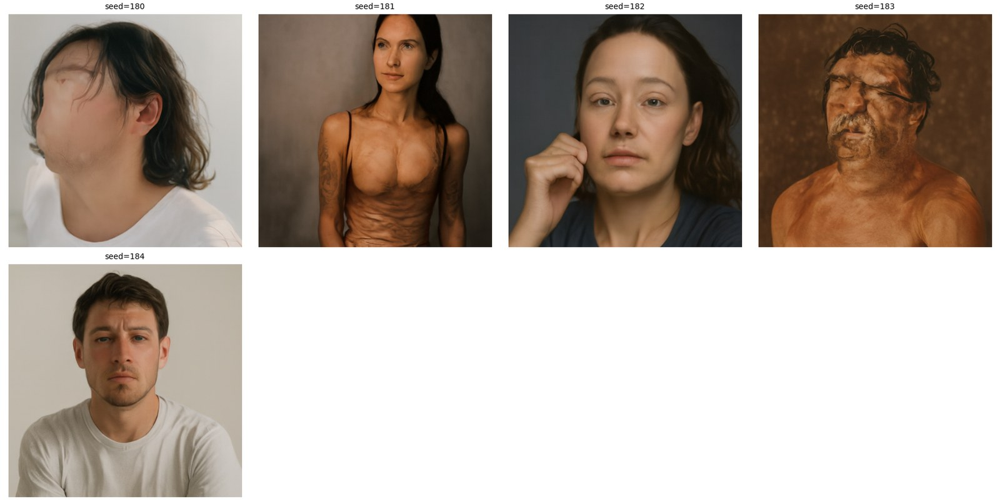
"A high quality photo" turned out to mean "a portrait of a person" to this model, since all five samples are people in front of plain backgrounds. Without guidance the quality is uneven. Seeds 182 and 184 are believable, but seed 180 is a face with no features, seed 183 is a distorted face with strange skin, and seed 181 has an odd torso.
CFG runs the model twice on the same \(x_t\) and \(t\), once with the prompt and once with the empty prompt, and pushes further in the direction that the prompt adds, \(v_{\mathrm{cfg}} = v_c + w(v_c - v_u)\) with \(w = 7\). With \(w = 0\) this is just the conditional prediction (the notebook checks this).
def cfg_velocity(x, t, condition, w, predict_velocity, null_condition=''):
#same image and time for both, one with the prompt and one with the empty prompt
v_c = predict_velocity(x, t, condition)
v_u = predict_velocity(x, t, null_condition)
#w = 0 gives back the plain conditional velocity
return v_c + w * (v_c - v_u)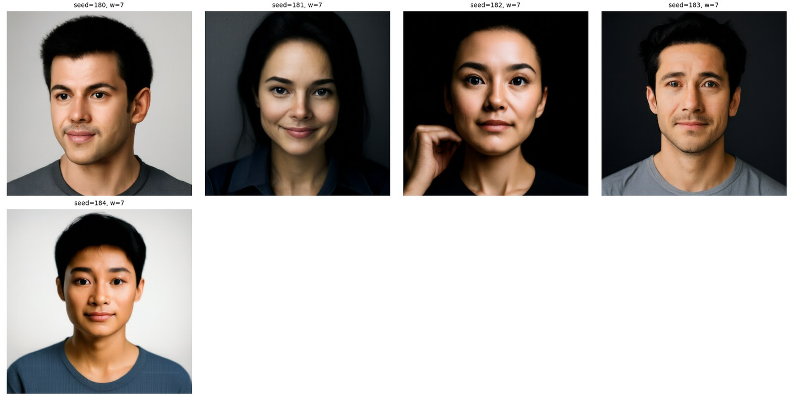
Every guided sample is now a clean, sharp, well-lit studio portrait, and the broken faces from 1.6 are gone. Some of the layout from each starting noise survives (seed 182 keeps the hand raised to the face). But the five images are also much more alike, all frontal head-and-shoulders shots against a plain backdrop. CFG trades diversity for prompt alignment and quality.
This is SDEdit. I noise a real image up to some starting time, then let the model flow it back to \(t = 1\). To denoise, the model has to invent details, so a low starting time (lots of noise) gives a big edit and a high one keeps the image almost unchanged.
def edit(image, noise, t_start, condition, predict_velocity, w=7, step_size=0.02):
#noise the real image up to t_start, then flow it back to t = 1 with cfg (sdedit)
x = interpolate(image, noise, t_start)
guided_velocity = lambda x, t: cfg_velocity(x, t, condition, w, predict_velocity, null_condition)
result, _ = euler_sample(x, t_start, step_size, guided_velocity)
return result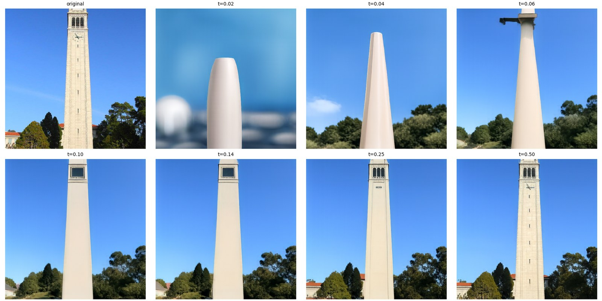
At 0.02 almost nothing is left and the model makes a close-up of a white rounded tip against a blurry blue sky. From 0.04 to 0.14 it keeps the tall white tower, blue sky and trees but simplifies the tower into a plain obelisk with a single window. The belfry arches come back at 0.25, and at 0.50 even the clock is back.
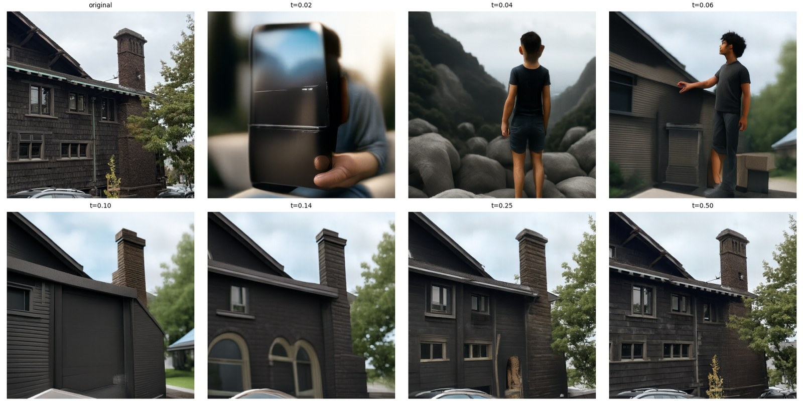
The lowest starting times only keep colors and rough layout. At 0.02 it becomes a hand holding a dark phone, at 0.04 a boy standing on rocks, and at 0.06 a boy touching the wall of a house. From 0.10 on it is a dark house with a chimney again, with the details changing (arched windows at 0.14), until 0.50 is nearly my photo.
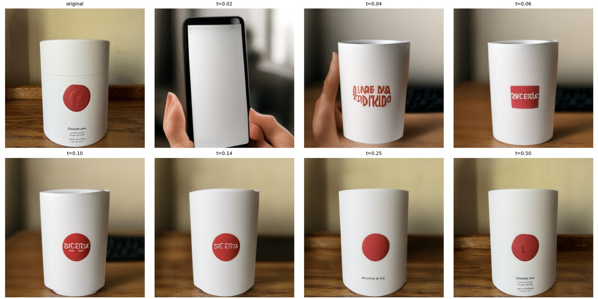
The candle goes through a phone held in a hand (0.02) and white cups with made-up red text (0.04 to 0.14), then back to the jar with its red seal. The model can't write, so the "Glossier you." label turns into gibberish letters until 0.50, where it finally copies it from the input.
The same procedure works on images from the web and on drawings. A drawing is far from the manifold of natural images, so denoising has to pull it onto that manifold, turning it into something photo-like.
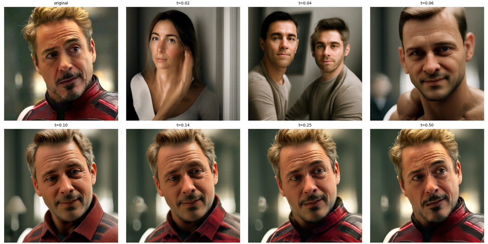
This one is already a photo, so it starts on the image manifold and the edit is about how much of the identity survives. At 0.02 to 0.06 it becomes different people entirely (a woman, two men, another man). From 0.10 to 0.25 it's a lookalike with the same pose, hair and lighting, and the red suit turns into a red plaid flannel shirt, which is a much more common thing to see in a photo. At 0.50 it is back to the original.
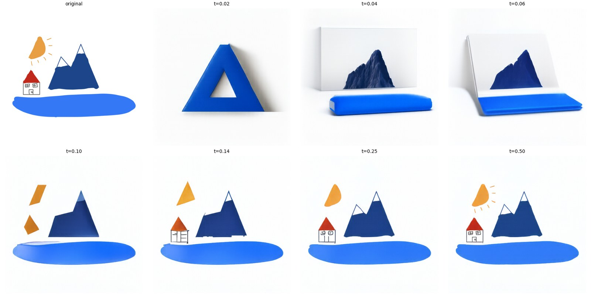
I expected the landscape to turn into a landscape photo, but the white background won and the model reads the drawing as an object photographed in a studio. At 0.02 it's a blue plastic triangle, and at 0.04 and 0.06 it's a mountain sculpture on a white card with a blue bar for the lake, like a product shot. From 0.10 on the drawing itself comes back, first with the house missing and the sun turned into flat paper shapes.
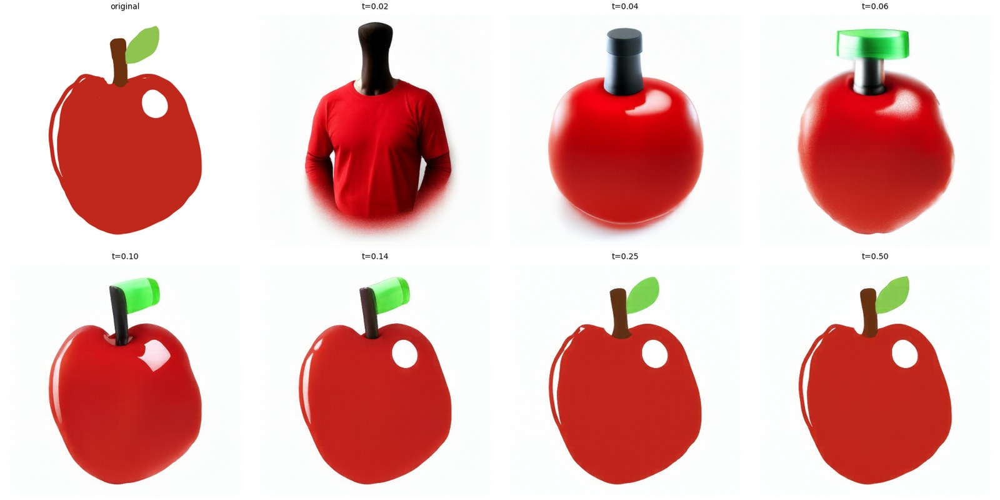
The apple works better. At 0.02 the red blob and brown stem become a red t-shirt on a dark mannequin neck. At 0.04 to 0.14 it turns into a glossy, 3D red apple with a shine, though the stem and leaf become a black or green bottle cap. From 0.25 on it stays my flat drawing. Both drawings show the same thing. The model keeps the colors and the layout, and invents whatever real object fits them best.
Same as 3.1, but the prompt now describes the edit, so the model invents details that match the new prompt.
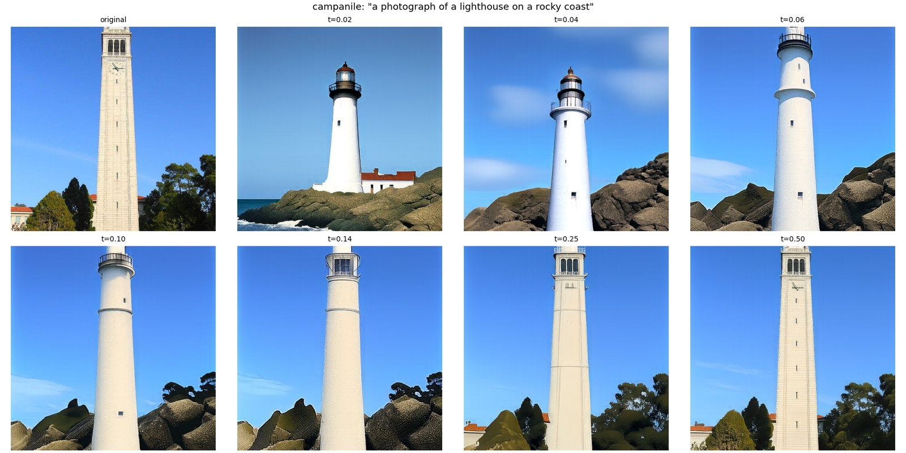
At 0.02 it's a complete lighthouse on a rocky coast. Between 0.04 and 0.14 it keeps the Campanile's framing, the tall white tower filling the middle of a blue sky, but puts a lantern room on top and swaps the trees for coastal rocks. At 0.25 the belfry comes back, and at 0.50 it is just the Campanile.
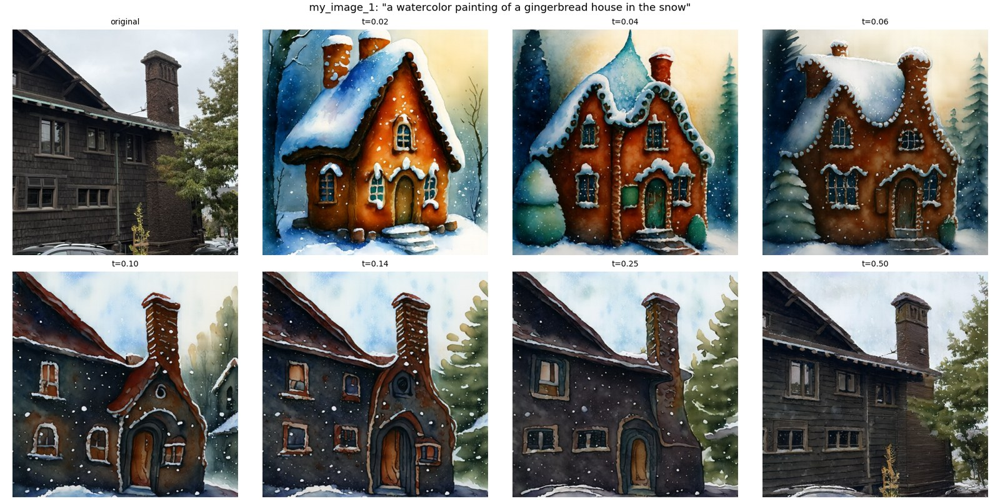
My favorite. At 0.02 to 0.06 it paints a brand new gingerbread house. At 0.10 to 0.25 it keeps my house's roofline, chimney, windows and the tree on the right, but repaints it as a watercolor with frosting along the edges and snow falling. At 0.50 it's my house with a snowy watercolor sky.
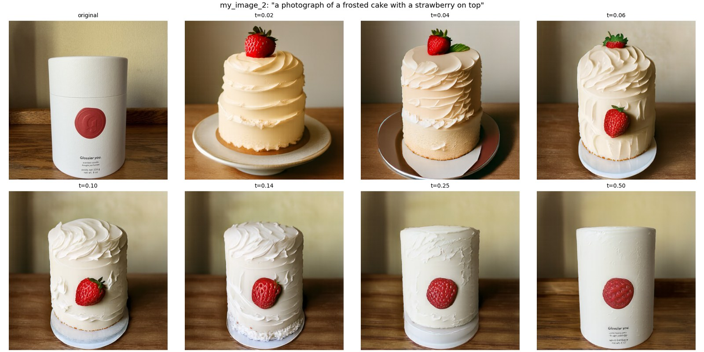
The white cylinder makes an easy cake. At 0.02 to 0.06 the strawberry goes on top as asked, but from 0.06 to 0.14 the model puts it where the red seal is, on the side of the cake. At 0.25 and 0.50 it's the jar again, with the seal now textured like a strawberry.
At every Euler step I get two velocities, one for the image as it is with prompt A, and one for the image rotated 180° with prompt B, which I rotate back. Averaging them makes one image that has to satisfy both prompts, one right side up and one upside down.
def anagram_velocity(x, t):
#upright view follows prompt a
v_a = cfg_velocity(x, t, condition_a, w, predict_velocity, null_condition)
#upside-down view follows prompt b, then rotate its velocity back to the upright frame
v_b = rotate180(cfg_velocity(rotate180(x), t, condition_b, w, predict_velocity, null_condition))
return (v_a + v_b) / 2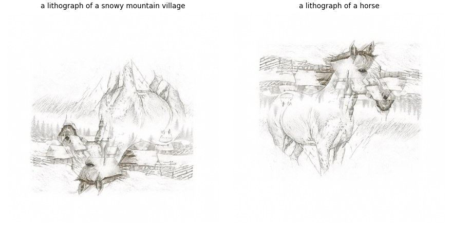
The first one works well. Right side up it's an old man's face, lit from the top so his forehead glows. Upside down that glow becomes the campfire and his face becomes the people around it. The second one is weaker. The village with mountains reads well, and the horse is clear upside down, but the horse's head is also visible in the village view, at the bottom.
The Project 2 hybrid idea, but on velocities. It combines the low frequencies of the velocity for prompt A with the high frequencies of the velocity for prompt B, with a Gaussian of size 265 and \(\sigma = 16\). From far away you only see the low frequencies (prompt A), up close the high frequencies (prompt B) take over.
def hybrid_velocity(x, t):
v_a = cfg_velocity(x, t, condition_a, w, predict_velocity, null_condition)
v_b = cfg_velocity(x, t, condition_b, w, predict_velocity, null_condition)
#low frequencies from prompt a (seen from far), high frequencies from prompt b (seen up close)
return lowpass(v_a) + (v_b - lowpass(v_b))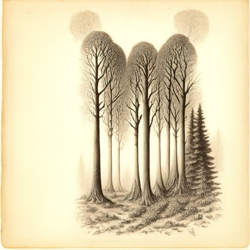
These were the hardest. Up close both work, giving a sepia waterfall over a cliff and a pencil drawing of a stand of trees. From far away the effect is weak. The skull only shows up as the rounded, head-shaped outline of the whole waterfall picture, and the cat is barely there, though the two pale tree crowns at the top could be ears. The low-pass prompt has to agree with the high-pass one about where the dark and light areas go, and these pairs didn't fully settle on a layout that works for both.
I trained everything in Part B on my laptop's GPU (an Apple M3 Pro, using PyTorch's mps backend),
so the notebook picks cuda, then mps, then cpu. All five training runs
together took about 50 minutes.
The UNet goes down from \(28 \times 28\) to \(14 \times 14\) to \(7 \times 7\) and squashes that to a single \(1 \times 1\) vector with average pooling, then goes back up. On the way up, every level gets the activations from the same level on the way down concatenated onto it. Those skip connections hand the fine detail straight to the output instead of making it survive the bottleneck. Each simple op is a conv (or transposed conv) followed by BatchNorm and GELU, like this DownConv.
class DownConv(nn.Module):
def __init__(self, in_channels: int, out_channels: int):
super().__init__()
#stride 2 halves the height and width
self.conv = nn.Conv2d(in_channels, out_channels, kernel_size=3, stride=2, padding=1)
self.bn = nn.BatchNorm2d(out_channels)
self.gelu = nn.GELU()
def forward(self, x):
return self.gelu(self.bn(self.conv(x)))and the whole network wires them together following the diagram.
def forward(self, x):
x0 = self.conv_in(x) #D x 28 x 28
x1 = self.down1(x0) #D x 14 x 14
x2 = self.down2(x1) #2D x 7 x 7
h = self.flatten(x2) #2D x 1 x 1
h = self.unflatten(h) #2D x 7 x 7
h = self.up1(torch.cat([x2, h], dim=1)) #4D x 7 x 7 -> D x 14 x 14
h = self.up2(torch.cat([x1, h], dim=1)) #2D x 14 x 14 -> D x 28 x 28
h = self.conv_out(torch.cat([x0, h], dim=1)) #2D x 28 x 28 -> D x 28 x 28
return self.final(h) #1 x 28 x 28The training pairs are made on the fly. I take a clean digit \(x\) and add Gaussian noise, \(z = x + \sigma\epsilon\). The figure shows how the noise grows with \(\sigma\).
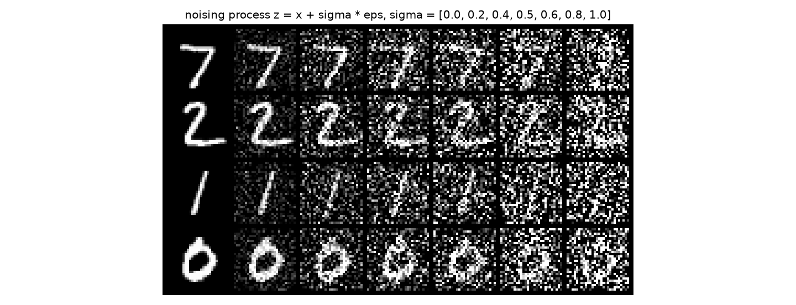
I trained the UNet (\(D = 128\)) for 5 epochs with Adam (learning rate \(10^{-4}\)), batch size 256 and \(\sigma = 0.5\), minimizing \(\lVert D_\theta(z) - x \rVert^2\). The noise is drawn fresh for every batch inside the training loop, so the network never sees the same noisy image twice.
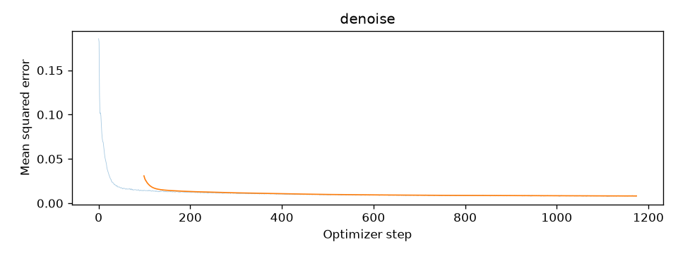
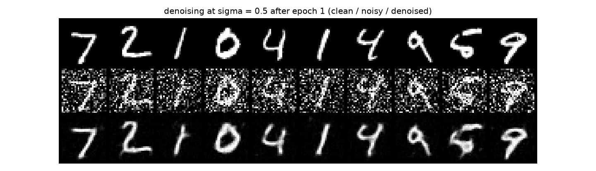
Even after one epoch the digits come back, just a little blotchy. By epoch 5 the strokes are smooth and the background is clean.
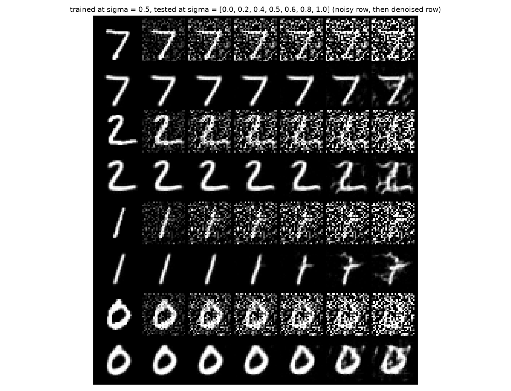
The denoiser only ever saw \(\sigma = 0.5\). Less noise than that is easy and the outputs stay perfect. At \(\sigma = 0.8\) and \(1.0\) it starts treating noise as strokes. The 1 grows an extra bar and turns into something like a 7, and the 0 and 2 pick up blobs. A denoiser trained at one noise level doesn't generalize to much stronger noise, which is a big reason flow matching trains on every noise level at once.
Same setup, but the input is now pure Gaussian noise with nothing to do with the target digit.
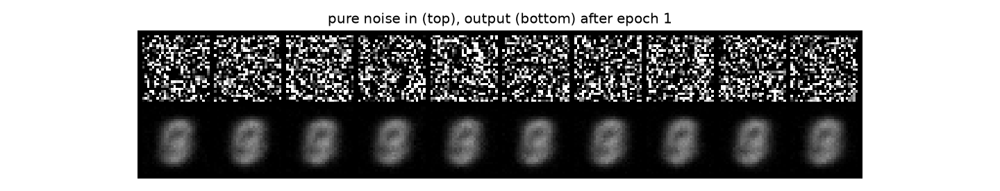
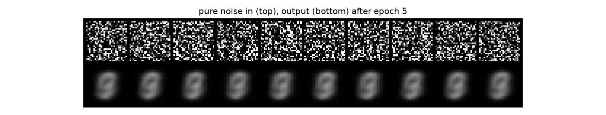
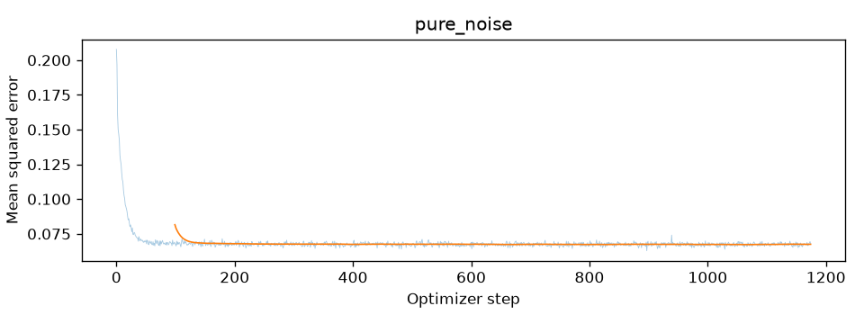
Every output is the same blurry blob, a mix of a 0, 3, 8 and 9, no matter what noise goes in. The noise carries no information about which digit it should become, so the network can't do better than one guess for all of them. With an MSE loss the guess that minimizes the total squared distance to every training digit is their mean, the centroid of the dataset. The outputs are within 0.0074 per pixel of the average training digit, so the network has basically memorized the mean image. That's why one-step denoising can't generate anything. To get a specific digit you have to commit to one gradually, step by step.
Flow matching trains on every point along the line from noise to data, so the network needs to know where it
is on that line. Each conditioning signal goes through an FCBlock (linear, GELU, linear) to get a
vector with one number per channel, which then scales the feature maps at two places, after the unflatten
(\(2D\) channels at \(7 \times 7\)) and after the first up block (\(D\) channels at \(14 \times 14\)).
t = t.float().view(-1, 1)
#(N, channels) -> (N, channels, 1, 1) so it broadcasts over the image
t1 = self.fc1_t(t)[:, :, None, None]
t2 = self.fc2_t(t)[:, :, None, None]
...
h = self.unflatten(self.flatten(x2))
h = h * t1 #modulated unflatten
h = self.up1(torch.cat([x2, h], dim=1))
h = h * t2 #modulated up1Training follows Algorithm 1. I pick a clean digit \(x_1\), noise \(x_0 \sim \mathcal{N}(0, I)\) and \(t \sim U[0, 1]\), build \(x_t = (1-t)x_0 + t x_1\), and regress the network onto the velocity of that straight line, \(\lVert (x_1 - x_0) - u_\theta(x_t, t) \rVert^2\).
def time_fm_forward(unet, x_1, num_ts):
unet.train()
#num_ts only matters for sampling, training draws t from the whole range [0, 1]
x_0 = torch.randn_like(x_1)
t = torch.rand(x_1.shape[0], device=x_1.device)
t_img = t.view(-1, 1, 1, 1)
x_t = (1 - t_img) * x_0 + t_img * x_1
#the target is the velocity of the straight path from noise to data
return F.mse_loss(unet(x_t, t), x_1 - x_0)\(D = 64\), batch size 64, Adam starting at \(10^{-2}\) with an exponential scheduler (\(\gamma = 0.1^{1/10}\), stepped once per epoch, so the learning rate ends at \(10^{-3}\)), 10 epochs.
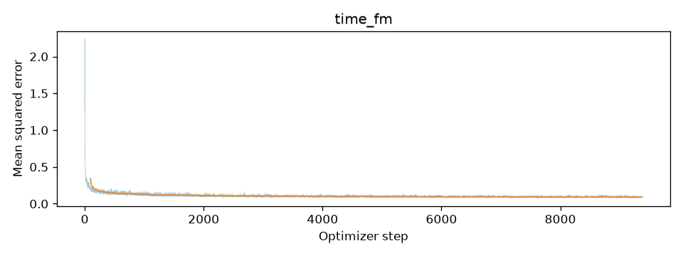
The loss stays much higher than the denoiser's 0.008. That's expected, since near \(t = 0\) many different digits could be at the end of the line, so even a perfect model can only predict their average velocity there.
Sampling follows Algorithm 2. It starts from noise at \(t = 0\) and takes 50 Euler steps of size \(\frac{1}{50}\) along the predicted velocity.
x = torch.randn((num_samples, 1, *img_wh), generator=torch.Generator().manual_seed(seed)).to(device)
#num_ts euler steps of size 1 / num_ts, from t = 0 up to t = 1
for k in range(num_ts):
t = torch.full((num_samples,), k / num_ts, device=device)
x = x + (1 / num_ts) * unet(x, t)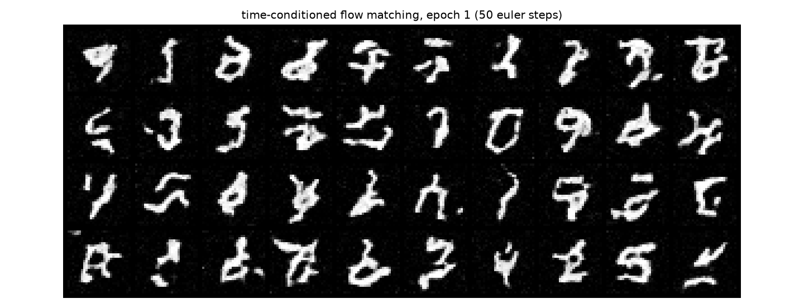
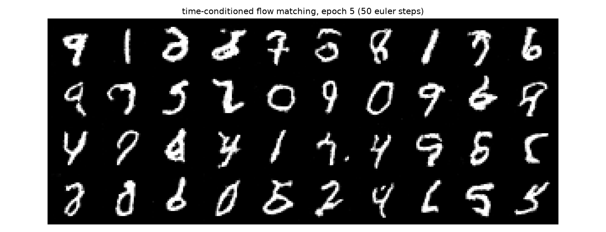
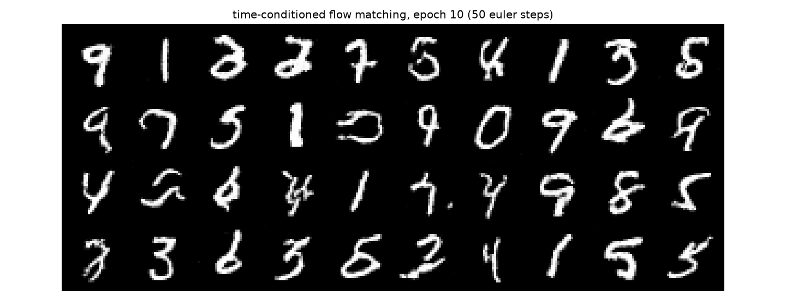
After epoch 1 the samples are digit-like scribbles. By epoch 5 most are readable, and by epoch 10 most are clear digits (9, 1, 5, 0, 8, 3), with a few still mixing two digits together. The model has to pick a digit on its own from the noise, and when the noise doesn't push it clearly toward one, it ends up between two.
The class goes in as a one-hot vector through two more FCBlocks. Now the class scales the features and time shifts them, \(c_1 \cdot h + t_1\). During training, 10% of the time the one-hot vector is replaced by all zeros, so the same network also learns the unconditional flow, which classifier-free guidance needs.
one_hot = F.one_hot(c, self.num_classes).float()
#mask == 0 turns the one-hot into the all-zero "no class" vector
if mask is not None:
one_hot = one_hot * mask.float().view(-1, 1)
...
h = c1 * h + t1 #class scales, time shifts
h = self.up1(torch.cat([x2, h], dim=1))
h = c2 * h + t2#drop the class 10% of the time so the same network also learns the unconditional flow
mask = (torch.rand(x_1.shape[0], device=x_1.device) >= p_uncond).float()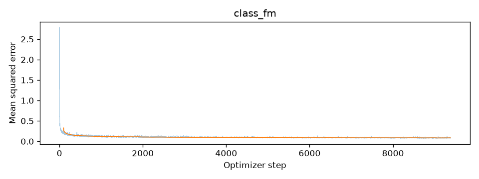
Sampling uses classifier-free guidance with \(\gamma = 5\) and 300 Euler steps. At every step the network runs once with the class and once with the zero vector, and the update pushes past the conditional prediction, away from the unconditional one, \(u = u_{\mathrm{uncond}} + \gamma(u_{\mathrm{cond}} - u_{\mathrm{uncond}})\). (Part B writes guidance this way, where \(\gamma = 1\) is plain conditional. Part A's \(v_c + w(v_c - v_u)\) is the same thing with \(\gamma = 1 + w\).)
u_uncond = unet(x, c, t, drop)
u_cond = unet(x, c, t, keep)
#classifier-free guidance, start from unconditional and push gamma times along (cond - uncond)
u = u_uncond + guidance_scale * (u_cond - u_uncond)
x = x + (1 / num_ts) * u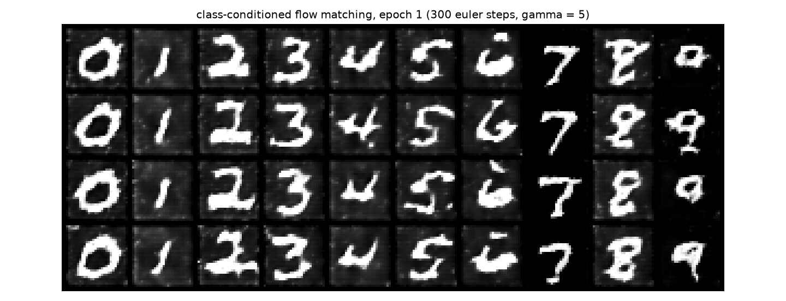
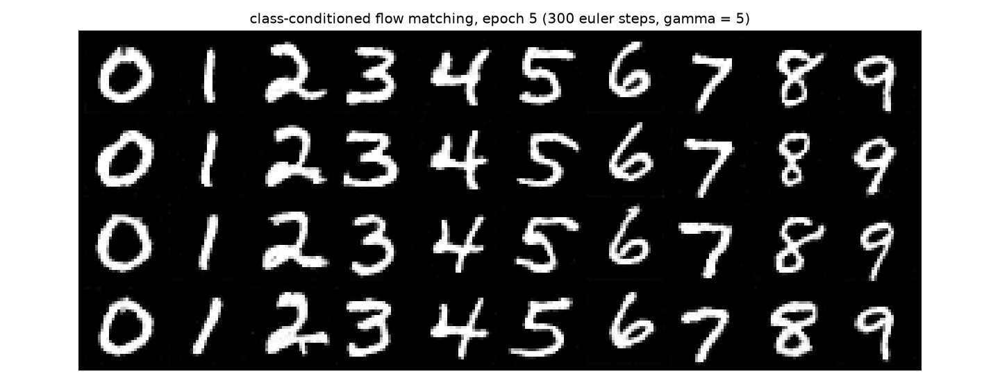
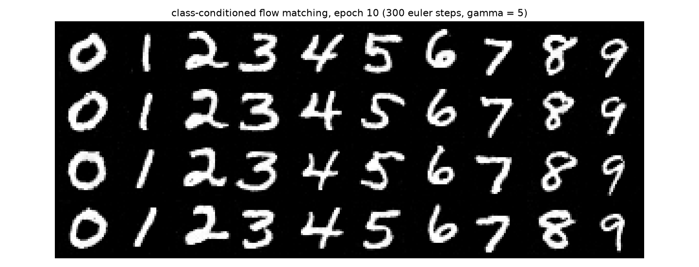
Telling the model which digit to make is a huge help. Already after epoch 1 every column is the right digit, just with gray squares around them and rough strokes. By epoch 5 the backgrounds are clean, and by epoch 10 the digits are smooth and still varied within each class (slanted and straight 1s, open and closed 4s). Compared with the time-only model, there are no more digits stuck between two classes.
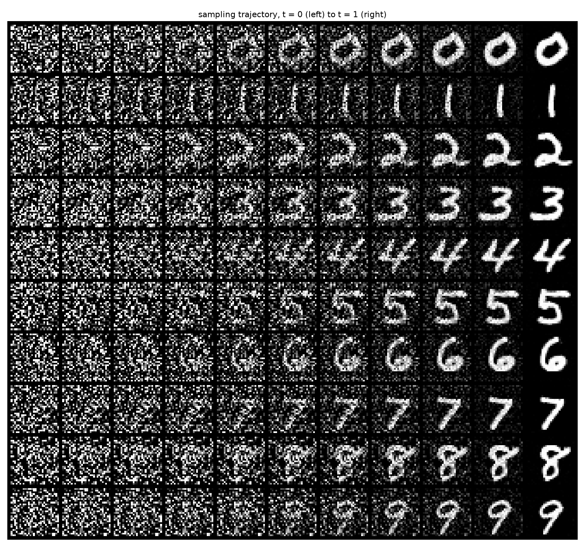
The trajectory shows the flow at work. For the first third of the steps it's still mostly noise, then the rough shape of the digit appears in the middle, and the last steps clean up the strokes and the background.
Without the scheduler the learning rate stays at its starting value the whole time, and \(10^{-2}\) is too big for the end of training, when the model only needs small corrections. The scheduler goes from \(10^{-2}\) down to \(10^{-3}\), so I replaced it with a single constant learning rate in the middle of that range, \(3 \times 10^{-3}\), and kept everything else the same (10 epochs, same seed and data order).
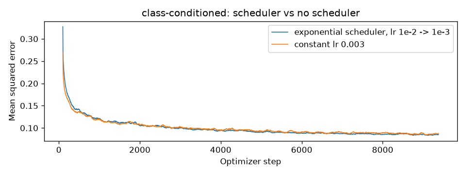
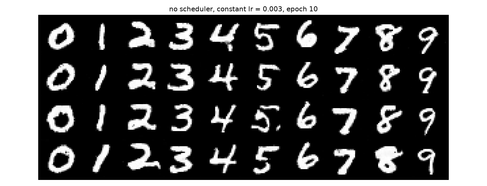
The two loss curves are almost on top of each other. Averaged over the last 200 steps the loss is 0.0850 with the scheduler and 0.0876 without it. The samples are about as good. All ten digits are clear, the strokes are a bit thicker, and there's one stray dot next to a 5. The scheduler gives a little extra polish at the very end, when the small learning rate lets the model settle, but a well-chosen constant learning rate gets almost all of the way there.
The main takeaway from this project is that a flow model is really just one simple idea used over and over. You predict which way to move from the current noisy image, take a small step, and ask again. Everything in Part A (denoising, generating, editing, anagrams, hybrids) was the same Euler loop with a different velocity plugged in, whether that was guided by a prompt, averaged with an upside-down copy, or split into low and high frequencies like the hybrids from Project 2.
The thing that made it click was seeing the same "average" show up everywhere. In Part B, the network trained on pure noise just learned the average of all the digits, because when the input tells you nothing, the mean is the best single guess under MSE. That's also why the one-step estimates in Part A were blurry, and why one-step actually beat Euler on MSE even though Euler looked sharper. Taking many small steps lets the model commit to one specific image a little at a time instead of landing on the blurry middle.
I also realised how much control comes from small changes. Choosing the starting time in SDEdit decides how much of the original survives, and the model always keeps the colours and layout and invents whatever real object fits them (my apple turned into a red t-shirt and then a glossy apple with a bottle cap). Classifier-free guidance made the samples much cleaner but also much more alike, and dropping the class 10% of the time during training is what makes guidance possible at all. On the practical side, I learned that the hard part of big models is often just fitting them in memory, while the MNIST model was small enough to train on my own laptop.